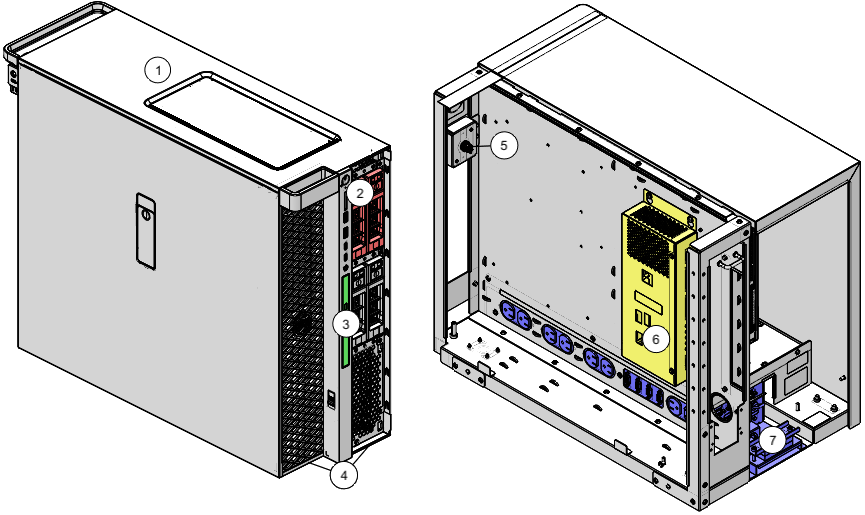

- 00000018WIA30CC2030GYZ
- id_20090602.7
- Jun 30, 2025 8:35:04 AM
Replacing operator workspace FRUs
An index for operator workspace FRU replacement procedures.

| Item | Description | Replacement Procedure |
|---|---|---|
| 1 | Dell T5820 Host PC | Replacing the host computer - Dell T5820 |
| 2 | 512 GB SATA III SFF SSD 3D-TLS or V NAND Memory or 512 GB Transcend SATA SSD | Replacing the GOC hard drive - Dell T5820 |
| 3 | Dell Slimline DVD ± RW SATA Drive for T5820XL Workstation | Replacing the DVD drive - Dell T5820 |
| 4 | GOC Dust Filter for T5820 | Replacing or cleaning the Global Operator Cabinet (GOC) dust filter |
| 6 | GOC Audio Assembly | Removing the Global Operator Cabinet Audio Assembly (GOCAA) |
| 7 | GOC Power Distribution Unit with 1-Wire | Replacing the Global Operator Cabinet (GOC) Power Distribution Unit (PDU) |
| - | Host PC CMOS Battery, 3V, CR2032 | Replacing the CMOS battery - Dell T5820 |
| - | 24-Inch LCD Monitor HP HC240 or 24-Inch LCD Monitor Eizo EV2430 | Replacing the LCD monitor |
| - | SCIM, Keyboard, Mouse | Replacing the Scan Control and Intercom Module (SCIM), keyboard, or mouse |
| - | Temperature and Humidity Sensor Kit | Replacing the temperature and humidity sensorl |